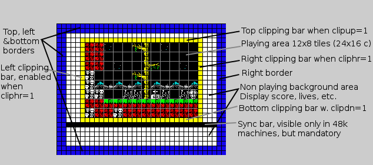
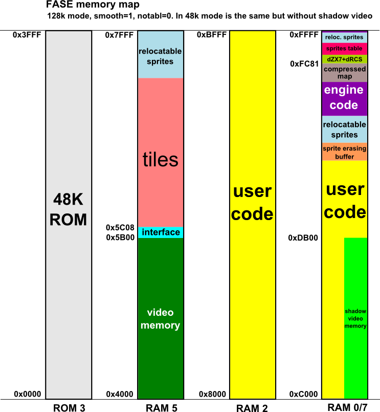

Introduction
FASE is a ZX Spectrum engine that helps you to create a specific type of game. The game must be a platform game without scrolling at 50fps. The major advantage in this engine is a very fast sprite painting routine, that allows you a big number of simultaneos sprites on screen without flickering. The engine is located in the upper side of the memory and the contened memory is occupied by graphics data, so you have from 0x8000 to write your own code. The demo code is written with SDCC and with ZXBasic, but you can use the compiler or the language that you want, the only restriction is that your code must start at 0x8000.Multi Machine
The engine detect your machine at loader stage and put the code that offers better non-flickering results depends on your machine. There are three cases:- Machines with floating bus like Sinclair 48K In this case we need a precise synchronization in the frame time (69888 cycles). The exact point is below the playing area, and the only way to do this is by putting special values at the video memory and detect reading in the floating bus. By this reason in this mode you'll see a bar, the "sync bar", that has a size of 32x1 cells (256x8 pixels).
- Machines with 128K memory paging Now the trick is very different. We use double buffering because we have a second screen (shadow video) at page 7. So the key is to show always the other screen while writting into the hidden one. That is, if we show the page 5 (normal screen) we write on page 7 (shadow screen) and vice versa.
- Rest of machines This is the worst case because we have only about 14400 cycles to paint flicker free sprites. We do the sync at start of the frame (as in 128K mode) but always write on the same screen. The good news is that there are few cases, always non original Sinclair machines (also called clones). If you want to try it just for curiosity, launch your emulator in 128K mode and choose 48K basic in the menu.
In this case we make the sync at the start of the frame via interrupt code.
How to use
Basically you must provide three kinds of elements. Graphics elements like sprites, tiles, bullet an map. Also code elements as your convenience, we put a simple demo in main.c (and main.bas) but you must need more files when your game grows in complexity. And finally configuration elements. The configuration elements are part of the engine itself, but we facilitate the task by grouping the most part on config.def file (the rest are in engine.asm and loader.asm).When all elements are ready you must compile the project, generating a file called game.tap. There are 3 ways of generate game.tap. Just execute fase.bat with zero or one of these parameters:
- fase gfx Will compile all files. Type this if you modify map.tmx or any png file or tmode constant in config.def. You can modify the png files with any image editor (I use GIMP) and map.tmx with Tiled (www.mapeditor.org/). To ensure legal ZX Spectrum colors filter it with PosterizeZX
- fase config If you change one of the options into config.def (except tmode)
- fase Without parameters just compile main.c (or main.bas) and generate game.tap
Modifing graphics
Just modify png files as in the example with your favorite image editor, I use GIMP. They are sprites.png, tiles.png, bullet.png and loading.png. We use the same format that Churrera. That is 256x32 sprites image in black/with with separate mask in black/red, and 256x[multiple of 16] tiles image, with a limit of 256 tiles. Remember that your pallette is limited to the 15 ZX Spectrum colors, if you are not sure pass your file by PosterizeZX (in util folder).The map file is stored in map.tmx, to open and change the file use Tiled. To create an empty map type employ GenTmx (also in util folder). If you want to create an empty screen (not accessible in the game) put the left upper tile with a tile different than zero, and the rest with tile zero. This won't encode this screen and it will cost only a byte.
Another trick is in the tile definition. You can use the same tile with different colors or different tiles with the same colors, in both cases you'll save many bytes in memory. During compilation you'll see a message with the different size of the tileset depending on the tile mode. There are 4 tile modes, depending if you index bitmap, attribute, both or none.
Modifing code
You have a complete example in SDCC and ZXBasic. The only requirement is that your compiler generates Z80 machine code starting at 0x8000, and that it communicates with the engine by the small memory area located between 0x5b00 and 0x5c07. In the C demo, the interface definition is located into fase.h and it's based on mapped variables, for example:unsigned char __at (0x5b00) sprites[12][4];With this code if I write sprites[2][1] I am refering to the X coordinate in the third (first one is zero) sprite. Note that writting in the screen is a little awkward, for example if you want to update the scoreboard. You must write a function and write to 5c06-5c07 (mapped in drwout) every time that you need to call the function:
drwout= (unsigned int)update_scoreboard;Also don't assume that the video memory is on 0x4000. You must add shadow<<8 to the address before write because in 128K mode there is another screen between 0xc000 and 0xdaff.
In the BASIC demo the interace definition is into fase.bas, has some mapped variables but the interace mainly is done by macros to peek and poke commands. Both BASIC and C demos have identical behaviour, you only must specify the language to use in line 3 of fase.bat. Default compiler is ZXBasic because it's included in the package. In case of SDCC you must download and install it, with the compiler executable in the path.
Take care about heavy task if you want mantain the 50fps. Sprite painting is about 3500 cycles per sprite, so if for example you have four sprites that's 14000 cycles of almost 70000 (20% of the frame). So in this example you have up to 56000 cycles to do non graphic stuff like collision management, inertia and gravity calculation and game logic. If you surpases this number you'll miss a frame.
Modifing configuration
The main part of the useful constants are grouped in config.def file:- tmode Tile mode, a number between 0 and 3 with this correspondence: 0=no index, 1=index bitmap, 2=index attr, 3=full index Observe the output of step1.exe and choose the tile mode that employs less tile storage
- smooth 0 or 1. With 0 the sprite movement is each 2 pixels. Only 4 rotations per sprite are stored. The 1 value is for fine 1 pixel movement and 8 rotations per sprite. Normally sprites storage is 5K with 0 and 10K with 1
- clipup 0, 1 or 2. 0 disabled, 1 clipping bar, 2 with code. This is for clipping the sprites in the upper bound of the playing area. If you need clipping, a black clipping bar on top is recommended because requires minimum code. Only use with code if the playing window is on the top of the screen and there is no space for the clipping bar
- clipdn 0, 1 or 2. Same of last parameter but for the lower bound
- cliphr 0, 1. This adds both left and right clipping bars. There is no option to clipping by code or clipping left or right bar separately
- safevr 0 or 1. Safe vertical coordinates. Avoid crashing if the Y coordinate of the sprite has an illegal value. Disable it if you ensure legal values from your program and you'll save some bytes
- safehr Same like safevr but for horizontal coordinates
- offsex Number of chars (groups of 8 pixels) from the left bound of the screen to the left bound of the playing window
- offsey Same as above but for Y coordinate
- notabl 0, 1. No table for screen calculation. This is the less important constant. Normally we use a 256 bytes table (notabl=0) to accelerate this calc. If you are scarce of memory put it to 1 and you'll have a little slower and smaller code
- bullet 0, 1. If you have bullets in your game, enable this constant
- bulmax Between 1 and 8. Put a limit to the simultaneous bullets in the screen. Save some cycles and memory if your game no need the eight available bullets.
- sprmax Between 1 and 12. Same as above but with sprites. Take account that about 8 sprites in the 48K mode you'll start to have flickering

Advanced stuff
As said before the interface between game and engine is by memory, exactly the area area located between 0x5b00 and 0x5c07. In this section I'll explain the structure in detail.- 5b00-5b2f We manage up to 12 sprites. Each one has four bytes, but the last one is for padding (it's faster to index an array if the element's size is a power of 2). So every sprite is configured with 3 bytes:
- Sprite number You have 16 different sprites so you must specify what sprite you want to show. Put the high bit to 1 if you want to disable the sprite (or to hide it)
- X coordinate To position the sprite into the screen. Legal values are between 0 and [screen wide in tiles]*16. For example if you have 12x8 tiles, your coordinate range is 0..192. The first and last eight coordinates may have clipping, so reduce the range to 8..184 to avoid it
- Y coordinate Same but with the other coordinate. In the 12x8 example the range is 0..128, and the reduced non-clipping one is 8..120
- 5b30-5b3f To manage the bullets, up to 8 of them. In this case there are only 2 values:
- X coordinate Same as sprite but the reduced range is a little wider (because bullet size is 8x8). If normal range is 0..192, the reduced one is 4..188. In the bullets never will be clipping, in case of the bullet is located outside or in a clipping position, this bullet won't be painted
- Y coordinate Like above but for Y coordinate
- 5b40-5bff Here we store the tile codes of the actual screen. Note that not all the positions are used. For example in a 12x8 screen, the number of tiles is 96, so we only use the range 5b40-5b9f. In our game this can be useful to obstacle detection. Also if we want change some tiles on our screen we must modify here first, and then specify the rectangular area in 5c02-5c03
- 5c00 A write to this byte will change the actual screen to other in the map, so we put here the number of screen. For example in a 2x2 map the number of screen is between 0 and 3
- 5c01 Even frame 0x00 or odd frame 0x80. This variable is used by the 128K mode of the engine. It tell us which screen (normal or shadow) is in use, so we need this variable when painting something into the screen like the scoreboard
- 5c02-5c03 Set to repaint a rectangular area of tiles. High nibble is for X coordinate and low nibble is the Y coordinate. First byte is for upper left corner of the rectangle and second byte is for the lower right coordinate of the corner
- 5c04-5c05 Paint into routine (not implemented yet). The idea is to paint into the playable area without interfering with the sprites
- 5c06-5c07 Paint out routine. Put here the address of the routine that would do the painting stuff. For painting elements outside the playable area like the scoreboard
If you want to know the internals of the engine, this memory map will be useful for you before reading the assembly code in engine.asm.

Credits
- Antonio Villena All the code, and most of the utilities like TmxCompress, GenTape, GenTmx, ZX7B
- Einar Saukas For the compression code in TmxCompress and in ZX7B
- na_th_an For doing "La Churrera" engine that inspired this project
- radastan He borrows the graphics on the demo, are the same that "Nightmare in Hallowen"
FASE 1.01 / 2014-02-04